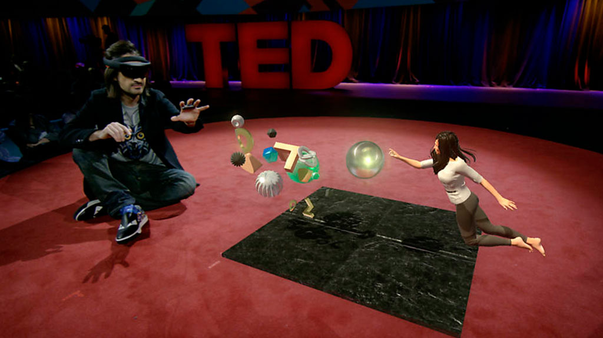

Realidade aumentada para jogos deve ser o grande foco da Google na GDC 2018
Realidade aumentada para jogos deve ser o grande foco da Google na GDC 2018
A edição da Game Developers Conference (GDC) de 2018 terá como anfitrião o maior buscador da internet. O Google vai receber a GDC entre os dias 21 e 23 de março e transmitir todo o evento em tempo real aos interessados.
Para participar do evento é preciso ter uma credencial concedida pela própria organização da GDC. Por conta dessa limitação é que a Google deseja alcançar muito mais interessados no assunto disponibilizando a transmissão ao vivo.
Google promete novidades na área de realidade aumentada (AR)
No ano passado, ao participar do evento o foco da Google estava concentrado em discutir o aumento do envolvimento dos jogadores e todas as possibilidades para monetização e gestão de propagandas das atividades. Para este ano, o que está previsto é o anúncio de novas funcionalidades envolvendo realidade aumentada e multiplayer voltadas para jogos em dispositivos móveis. Algumas sessões das conferências se concentrarão em possibilidades de integração de ARCore em dispositivos com sistema Android e Poly API.
Outra novidade da Google para o evento é a apresentação do YouTube Gaming. A ideia da plataforma é disponibilizar material sobre utilização e parceria de anúncios da Google, aprendizagem sobre jogos voltados para dispositivos móveis e seminários do Google Cloud Player-vs-Player.
Investimentos da Google no mundo dos games
O investimento da Gigante de Buscas no ramo de games não é uma iniciativa recente. Desde 2012 existe uma parceria com a Niantic Labs visando à criação de um jogo chamado Ingress, no qual a experiência com a realidade virtual incentiva o jogador a percorrer locais cuja base é dada pelo Google Maps. Depois, já em 2014 a Google entrou na onda do Pokémon e escondeu 150 bichinhos no Google Maps, por ocasião do April Fools Day. Por isso, vale a pena aguardar novidades nesse sentido.
Para além das novidades no ramo da tecnologia propriamente dito, a Google espera usar o espaço de debate do evento ainda para discutir novas formas de expansão de usuários para mercados emergentes.